library(sf)
library(ggplot2)
#Reading Spain borders
esp0 <- st_read(dsn="./data/gadm41_ESP_shp/gadm41_ESP_0.shp", quiet = TRUE)
esp0<-st_simplify(esp0, dTolerance=2000)
esp1 <- st_read(dsn="./data/gadm41_ESP_shp/gadm41_ESP_2.shp", quiet = TRUE)
esp1<-st_simplify(esp1, dTolerance=2000)
esp3 <- st_read(dsn="./data/gadm41_ESP_shp/gadm41_ESP_3.shp", quiet = TRUE)
esp3<-st_simplify(esp3, dTolerance=2000)
esp4 <- st_read(dsn="./data/gadm41_ESP_shp/gadm41_ESP_4.shp", quiet = TRUE)
esp4<-st_simplify(esp4, dTolerance=2000)8: Geometric Operations with Vectors
Spatial Joins, Distances, Centroids, Combining and Dissolving, Buffers
Intro
The main goals for today include:
- Familiarize ourselves with vector layers: points, lines, and polygons
- Examine spatial and non-spatial properties of vector layers
- Create subsets of vector layers based on their attributes
Specifics:
We will again make use to the sf package:
- join data to a vector by location
- agregate points by polygon
- perform geometric calculations: areas, change units
- calculating distances
- calculating centroids
- making buffers and dissolving polygons
- casting lines
- intersecting polygons
- aggregating polygons by attributes
- calculating line density by polygona
Join by Location
We will work with wildfires data to demonstrate the principles of join by location
Spain is one of the countries worst affected by wildfires.
We try to match provinces with fires.
Just August of 2021
The latest year for which data is available is 2021.
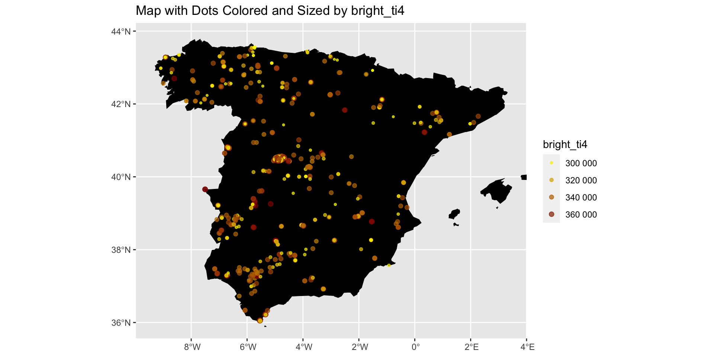Entire Year
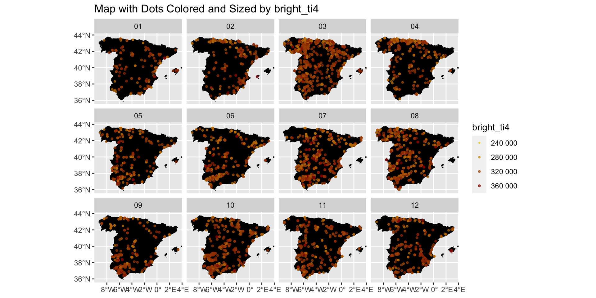Spatial Join
spatial joinis one of the most common operations in spatial analysis.In a spatial join we are “attaching” attributes from one layer to another, based on their spatial relations.
For example, we will match the firest to Spanish provinces.
Spatial Join
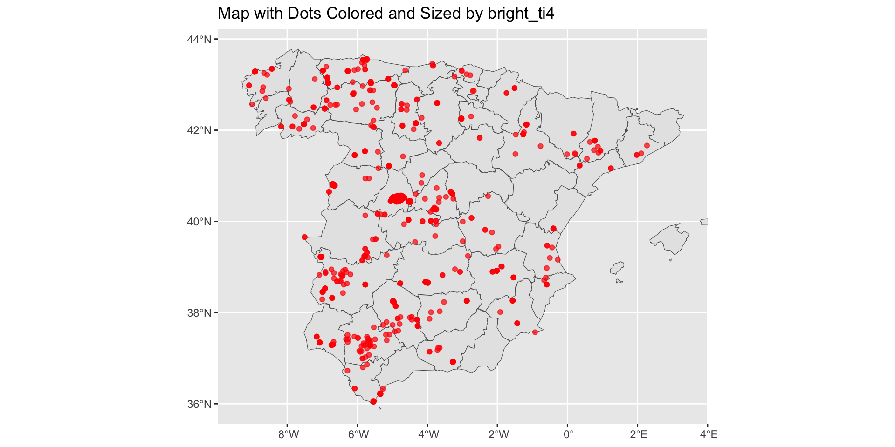Spatial Join
Before we get further, here are the links
The original data for the shapefiles was downloaded from https://gadm.org
The wildfires data is from https://firms.modaps.eosdis.nasa.gov/country/
More information about the meaning of the variables can be found at: https://www.earthdata.nasa.gov/learn/find-data/near-real-time/firms/vnp14imgtdlnrt#ed-viirs-375m-attributes
Spatial Join
Place the folder with the shape files in the relevant week folder
Do the same for wildfires
This is how we read the shapefiles for Spain
Spatial Join
And this is how we read the wildfires:
#Reading wildfires
fires <- read.csv('./data/fires_2021/viirs-snpp_2021_Spain.csv')
#Turning the acq_date variable into a date variable
fires$acq_date<-as.Date(fires$acq_date)
#Make sf object from points
fires<-st_as_sf(fires, coords = c("longitude", "latitude"))
fires <- st_set_crs(fires, st_crs(esp0)) # 4326 is the EPSG code for WGS84
# Extract month and year information
fires$month <- format(fires$acq_date, "%m")
fires$year <- format(fires$acq_date, "%Y")
#Simplifying our data
fires<-subset(fires, type==0)
#Reading only August
fires_aug<-subset(fires, acq_date>"2021-07-31" & acq_date<"2021-09-01")Spatial Join
We will try to count the number of fires by province
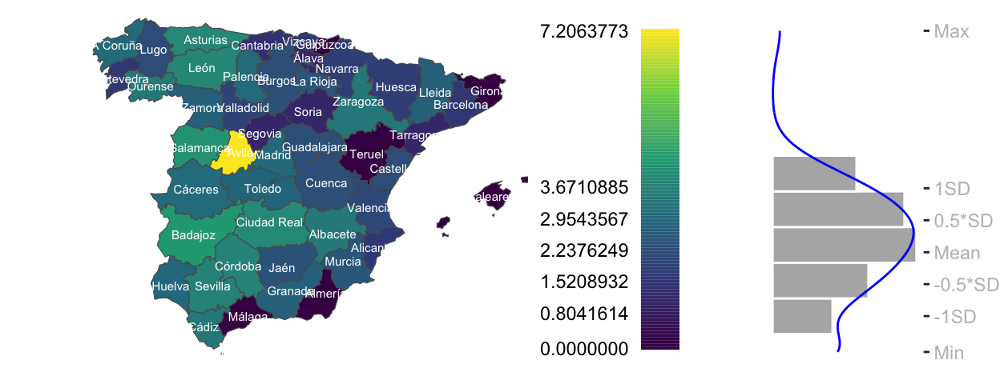Spatial Join
And this is how we produce this graph:
Step 1:
library(dplyr)
library(gridExtra)
#Perfoming the spatial join
xjoin<-st_join(fires_augb, esp1b)
#Dropping the geometry from the object (i.e. turning it into a regular dataframe)
xjoin<-st_drop_geometry(xjoin)
#Adding the number 1 to every observation so that we can sum the numbers by polygon
xjoin$fire_no<-1
#Summing by polygons
sum_per_province <- xjoin %>%
group_by(NAME_2) %>%
summarize(sum_fires = sum(fire_no, na.rm = TRUE))
#Perfoming a left join to the shapefiles
esp1c<-left_join(esp1b, sum_per_province, by = c("NAME_2"="NAME_2"))
#Replacing NAs with 0
esp1c$sum_fires[is.na(esp1c$sum_fires)]<-0
#Calculating logs to eliminate extreme values
esp1c$log_fires<-log(esp1c$sum_fires+1)Spatial Join
And this is how we produce this graph:
Step 2:
#Calculating SD and Mean
fires_sd <- sd(esp1c$log_fires, na.rm=T)
fires_mean <- mean(esp1c$log_fires, na.rm=T)
#Creating different steps
step1<-min(esp1c$log_fires, na.rm=T)
step2<-fires_mean - fires_sd
step3<-fires_mean - 0.5*fires_sd
step4<-fires_mean
step5<-fires_mean + 0.5*fires_sd
step6<-fires_mean + fires_sd
step7<-max(esp1c$log_fires, na.rm=T)
#Putting all the steps in a list
clint <- c(step1,
step2,
step3,
step4,
step5,
step6,
step7)Spatial Join
And this is how we produce this graph:
Step 3:
#Reading Spain borders
esp0 <- st_read(dsn="./data/gadm41_ESP_shp/gadm41_ESP_0.shp", quiet = TRUE)
esp0<-st_simplify(esp0, dTolerance=2000)
#Simplifying country polygon
esp0b = st_cast(esp0,"POLYGON")
#Calculating polygon area
esp0b$area<-st_area(esp0b)
#Turning the units into square km
esp0b$area2<-units::set_units(esp0b$area, km^2)
#Only choosing the largest polygon
esp0c<-subset(esp0b, area2==max(esp0b$area2))
#Making a box object around the polygon
bbox <- st_bbox(esp0c)
# Extracting min and max latitudes and longitudes
min_lat_y <- bbox["ymin"]
max_lat_y <- bbox["ymax"]
min_lon_x <- bbox["xmin"]
max_lon_x <- bbox["xmax"]Spatial Join
And this is how we produce this graph:
Step 4:
p1<-ggplot(esp1c, aes(fill=log_fires)) +
geom_sf() +
theme_void() +
scale_fill_viridis_c(option = "viridis",
breaks = clint,
guide = guide_coloursteps(even.steps = FALSE,
title = NULL,
barheight = unit(5.3, "cm"),
barwidth = unit(0.64, "cm"),
label.position = "left"))+
geom_sf_text(aes(label = NAME_2), colour = "white", size=2)+
coord_sf(xlim = c(min_lon_x - error, max_lon_x + error),
ylim = c(min_lat_y - error, max_lat_y + error))Spatial Join
And this is how we produce this graph:
Step 5:
#The Histogram
p2<- ggplot(esp1c, aes(log_fires)) +
geom_histogram(aes(y = after_stat(density)), bins = 10,
fill = "grey70",
col = "white")+
coord_flip() +
geom_density(colour = "blue")+
scale_x_continuous(breaks = clint,
labels = c("Min", "-1SD" , "-0.5*SD", "Mean", "0.5*SD", "1SD", "Max"),
position = "top", limits = range(clint)) +
scale_y_continuous(labels = NULL, breaks = NULL) +
ylab(NULL) +xlab(NULL) +
theme(plot.margin = margin(0.1,0,0,0.1, "in"),
axis.text = element_text(colour = "grey"),
panel.background = element_blank())Spatial Join
And this is how we produce this graph:
Step 6:
Spatial Join
And this is how we produce this graph:
Step 6:
Spatial Join
Thus, with the help of spatial join, we can count the number of fires by district.
We can further use a barplot to rank provinces.
ggplot(esp1c,
aes(x = reorder(NAME_2, -log_fires), y = log_fires)) +
labs(x = "Province")+
geom_bar(stat = "identity")+
theme(
panel.background = element_rect(fill = "white", color = "white"),
#axis.line = element_line(color = "black"),
panel.grid.major = element_line(color = "gray95", linetype = "solid"),
panel.grid.minor = element_blank(),
panel.border = element_rect(color = "black", fill = NA),
axis.text = element_text(color = "black"),
axis.title = element_text(color = "black"),
strip.text = element_text(color = "black"),
legend.text = element_text(color = "black"),
legend.title = element_text(color = "black"),
plot.title = element_text(color = "black"),
axis.text.x = element_text(angle = 45, hjust = 1))Spatial Join
Thus, with the help of spatial join, we can count the number of fires by district.
We can further use a barplot to rank provinces.
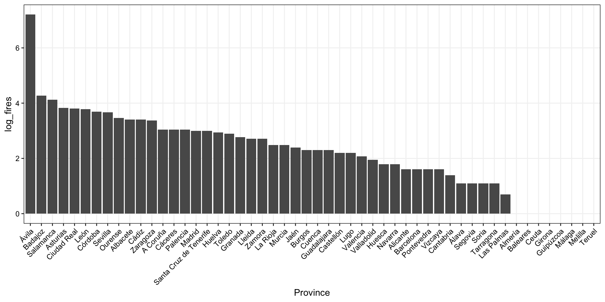Geometric Calculations
Geometric Calculations can be divided into three groups based on their output:
Numeric: calculating areas, length, or polygon areas
Logical: whether feature A intersects feature B
Spatial: creating polygon centroids, buffers, or intersection area
Numeric Geometric Calculations
There are several functions pertaining to the sf package that are helpful to calculate numeric geometric properties:
Functions applicable to individual geometries
st_box- to calculate the bounding box coordinatesst_area- to calculate the area of a featurest_length- to calculate length of lines of perimetersst_dimension
Functions applicable to geometry pairs
st_distance- to calculate distance between units
Numeric Geometric Calculations: Area
For example, we can use st_area to calculate the area of the provinces in Spain
If we examine the first six entries, we see the following output:
Meters or Square Meters are the default units for area and distance calculations.
We can convert the units objects to other type of units such as Square Kilometers
Numeric Geometric Calculations: Area
And here how they compare to the original calculation:
Transformation to Square Km:
Original area:
Notice however that the two columns are not numeric. They are units.
Numeric Geometric Calculations: Area
We can make this a numeric variable in the following way:
Numeric Geometric Calculations: Area
We can visualize the area in the following way:
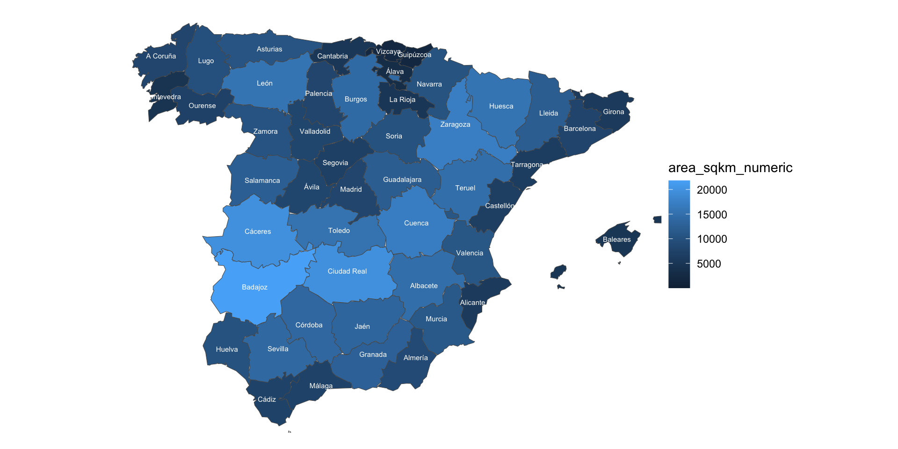Numeric Geometric Calculations: Distance
We can calculate the distance between two features using st_distance.
Numeric Geometric Calculations: Distance
Let’s say that we want to calculate the distance between Avila and Valencia
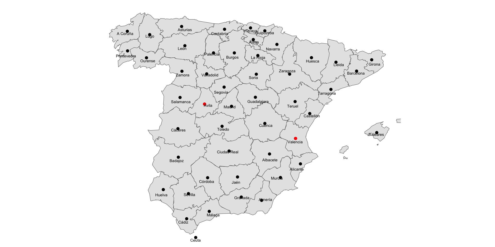Numeric Geometric Calculations: Distance
To do this, we can simply run:
Rows refers to origins and column refers to destination
So the distance between Avila and Avila is 0 meters.
The distance between Avila and Valencia is 377692.8 meters
The distance between Valencia and Avila is 377692.8 meters
The distance between Valencia and Valencia is 0 meters
Numeric Geometric Calculations: Distance
The matrix dimensions are
Numeric Geometric Calculations: Distance
We can of course calculate distances among multiple points
#Step1: Selecting the regions of interest
place_int2<-subset(esp1_ctr, NAME_2=="Valencia" | NAME_2=="Ávila" | NAME_2=="Madrid")
#Step2: Mapping centroids onto polygons
ggplot() +
geom_sf(data= esp1c) +
geom_sf(data= esp1_ctr, color="black") +
geom_sf(data= place_int2, color="red") +
geom_sf_text(data=esp1_ctr, aes(label = NAME_2), colour = "black", size=2, hjust=0.5, vjust=1.5)+
theme_void() +
coord_sf(xlim = c(min_lon_x - error, max_lon_x + error),
ylim = c(min_lat_y - error, max_lat_y + error))Numeric Geometric Calculations: Distance
We can of course calculate distances among multiple points
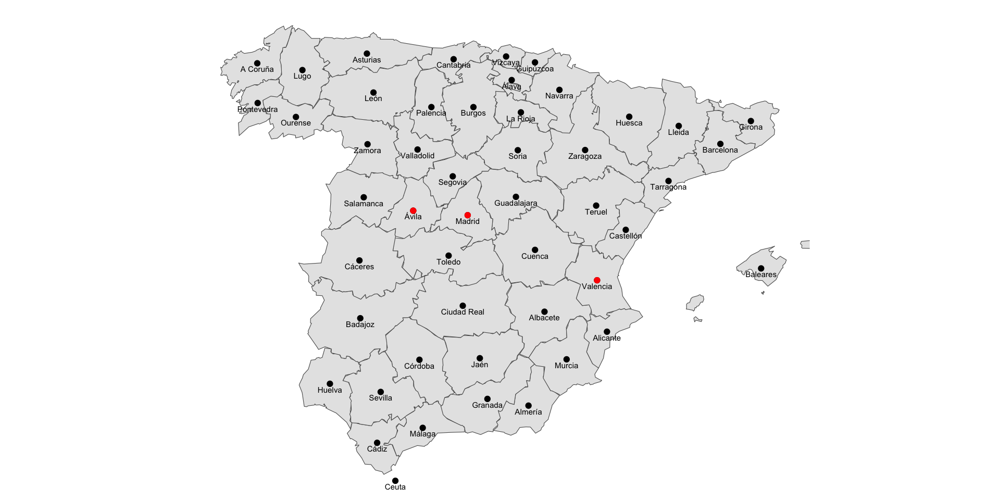Numeric Geometric Calculations: Distance
We can of course calculate distances among multiple points
Numeric Geometric Calculations: Distance
We can now calculate the distance
Numeric Geometric Calculations: Distance
The result is matrix of units values
Units: [m]
[,1] [,2] [,3]
[1,] 0.0 104258.7 378188.6
[2,] 104258.7 0.0 278818.2
[3,] 378188.6 278818.2 0.0Rows refers to origins and columns refers to destination
So the distance between Avila and Avila is 0 meters.
The distance between Avila and Madrid is 104228.0 meters
The distance between Avila and Valencia is 377692.8 meters
The distance between Madrid and Avila is 104228.0 meters
The distance between Madrid and Avila is 0 meters
The distance between Madrid and Valencia is 278401.9 meters
And so on…
Numeric Geometric Calculations: Distance
Just like before, we can set the units to km
Logical geometric calculations
There are are a variety geometric calculations including:
st_contains_properlyst_containsst_covered_byst_coversst_crossesst_disjoint
st_equals_exactst_equalsst_intersectsst_is_within_distancest_overlapsst_touchesst_within
Here, we will mostly use st_intersects.
Logical geometric calculations: st_intersects
The st_intersects function detects intersection
Two geometries intersect when they share at least one point in common.
By default, st_intersects resturns a list
If we specify the sparse=FALSE option, we obtain a matrix
Logical geometric calculations: st_intersects
For example, this is the output of the intersection between the province shapefiles and the fires
[,1] [,2] [,3] [,4] [,5] [,6] [,7] [,8]
[1,] FALSE FALSE FALSE FALSE FALSE FALSE FALSE FALSE
[2,] FALSE FALSE FALSE FALSE FALSE TRUE FALSE FALSE
[3,] FALSE FALSE FALSE FALSE FALSE FALSE FALSE FALSE
[4,] FALSE FALSE FALSE FALSE FALSE FALSE FALSE FALSE
[5,] FALSE FALSE FALSE FALSE FALSE FALSE FALSE FALSE
[6,] FALSE FALSE FALSE FALSE FALSE FALSE FALSE FALSE
[7,] FALSE FALSE FALSE FALSE FALSE FALSE FALSE FALSE
[8,] FALSE FALSE FALSE FALSE FALSE FALSE FALSE FALSELogical geometric calculations: st_intersects
We have provinces on the Y-axis and all fires on the X-axis
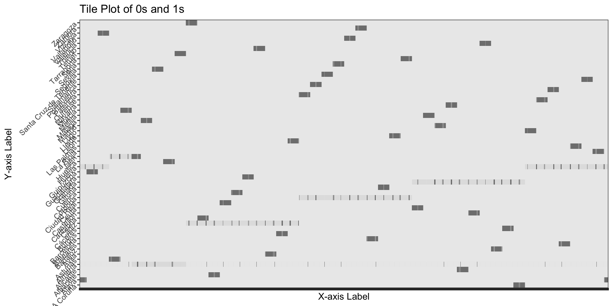Logical geometric calculations: st_intersects
To count the number of fires by province, we can perform the following operations:
Logical geometric calculations: st_intersects
To count the number of fires by province, we can perform the following operations
We can then map it out
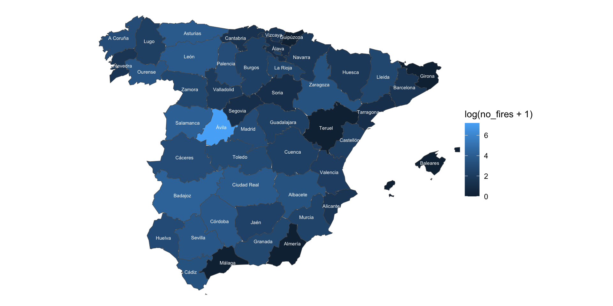Spatial geometric calculations
The sf package provides common geometry operation functions
st_centroidst_bufferst_convex_hullst_voronoist_sample
Spatial geometric calculations

Spatial geometric calculations

Spatial geometric calculations

Spatial geometric calculations

Spatial geometric calculations

Spatial geometric calculations: Centroids
A centroid is the geometric center of the geometry, represented by one point.
For example, we have already calculated polygon centroids
#Step1: Calculating centroids
esp1_ctr<-st_centroid(esp1c)
#Step2: Mapping centroids onto polygons
ggplot() +
geom_sf(data= esp1c) +
geom_sf(data= esp1_ctr, color="black") +
geom_sf_text(data=esp1c, aes(label = NAME_2), colour = "black", size=2, hjust=0.5, vjust=1.5)+
theme_void() +
coord_sf(xlim = c(min_lon_x - error, max_lon_x + error),
ylim = c(min_lat_y - error, max_lat_y + error))Spatial geometric calculations: Centroids
A centroid is the geometric center of the geometry, represented by one point.
For example, we have already calculated polygon centroids

Spatial geometric calculations: Combining and Dissolving
The st_combine and st_union functions can be used to combine multiple geometries into a single geometry
st_combine combines geometries into one. st_union dissolves internal borders
We can easily see the difference below:
library("gridExtra")
esp1 <- st_read(dsn="./data/gadm41_ESP_shp/gadm41_ESP_2.shp", quiet = TRUE)
p1<-ggplot()+
geom_sf(data=st_combine(esp1))+theme_void() +
coord_sf(xlim = c(min_lon_x - error, max_lon_x + error),
ylim = c(min_lat_y - error, max_lat_y + error))+
ggtitle("st_combine")
p2<-ggplot()+
geom_sf(data=st_union(esp1))+theme_void() +
coord_sf(xlim = c(min_lon_x - error, max_lon_x + error),
ylim = c(min_lat_y - error, max_lat_y + error))+
ggtitle("st_union")
grid.arrange(p1, p2, ncol=2)Spatial geometric calculations: Combining and Dissolving
The st_combine and st_union functions can be used to combine multiple geometries into a single geometry
st_combine combines geometries into one. st_union dissolves internal borders
We can easily see the difference below:
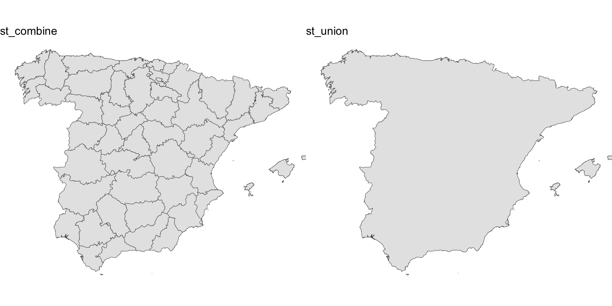Spatial geometric calculations
We can also see their attribute table:
Original geometry:
Simple feature collection with 3 features and 13 fields
Geometry type: MULTIPOLYGON
Dimension: XY
Bounding box: xmin: -6.473472 ymin: 35.93736 xmax: -1.630006 ymax: 38.72911
Geodetic CRS: WGS 84
GID_2 GID_0 COUNTRY GID_1 NAME_1 NL_NAME_1 NAME_2 VARNAME_2
1 ESP.1.1_1 ESP Spain ESP.1_1 Andalucía NA Almería NA
2 ESP.1.2_1 ESP Spain ESP.1_1 Andalucía NA Cádiz NA
3 ESP.1.3_1 ESP Spain ESP.1_1 Andalucía NA Córdoba NA
NL_NAME_2 TYPE_2 ENGTYPE_2 CC_2 HASC_2 geometry
1 NA Provincia Province 04 ES.AN.AM MULTIPOLYGON (((-3.030694 3...
2 NA Provincia Province 11 ES.AN.CD MULTIPOLYGON (((-5.841249 3...
3 NA Provincia Province 14 ES.AN.CO MULTIPOLYGON (((-4.248001 3...Spatial geometric calculations
st_combine geometry
Geometry set for 1 feature
Geometry type: MULTIPOLYGON
Dimension: XY
Bounding box: xmin: -18.16153 ymin: 27.63736 xmax: 4.328195 ymax: 43.79153
Geodetic CRS: WGS 84st_union geometry
Spatial geometric calculations
Calculating the distance between Ávila and Valencia
# Subsetting the cities
avila <- esp1[esp1$NAME_2 == 'Ávila', ]
valencia <- esp1[esp1$NAME_2 == 'Valencia', ]
# Union
avila <- st_union(avila)
valencia <- st_union(valencia)
# Calculating centroids
avila_ctr = st_centroid(avila)
valencia_ctr = st_centroid(valencia)
# Calculating distance
d = st_distance(avila_ctr, valencia_ctr)
dUnits: [m]
[,1]
[1,] 377692.8Spatial geometric calculations
Mapping the centers
Spatial geometric calculations
Mapping the centers
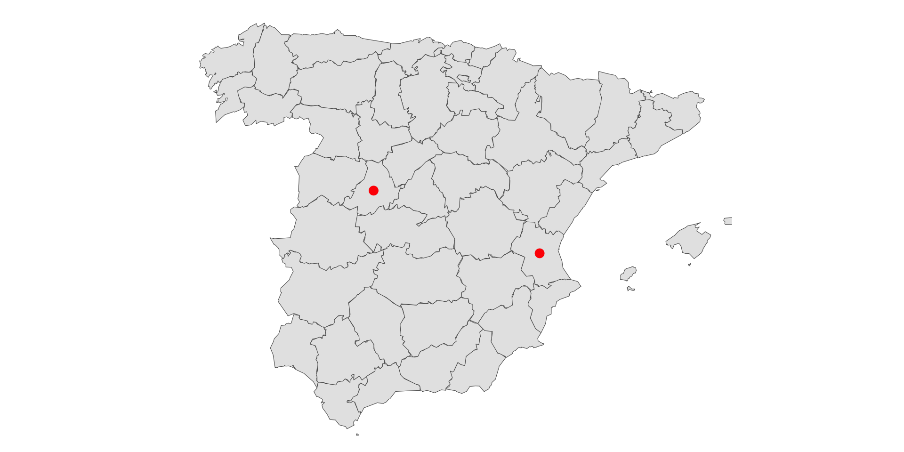Spatial geometric calculations
We can use st_combine to transform the points into a single MULTIPOINT geometry.
st_combine is similar to st_union but only combines and does not dissolve
Geometry casting
We can use st_cast to draw a line between the two points
Geometry set for 1 feature
Geometry type: LINESTRING
Dimension: XY
Bounding box: xmin: -4.946037 ymin: 39.36923 xmax: -0.7997943 ymax: 40.57053
Geodetic CRS: WGS 84We can also visualize it:
Geometry casting
We can use st_cast to draw a line between the two points
Geometry set for 1 feature
Geometry type: LINESTRING
Dimension: XY
Bounding box: xmin: -4.946037 ymin: 39.36923 xmax: -0.7997943 ymax: 40.57053
Geodetic CRS: WGS 84We can also visualize it:
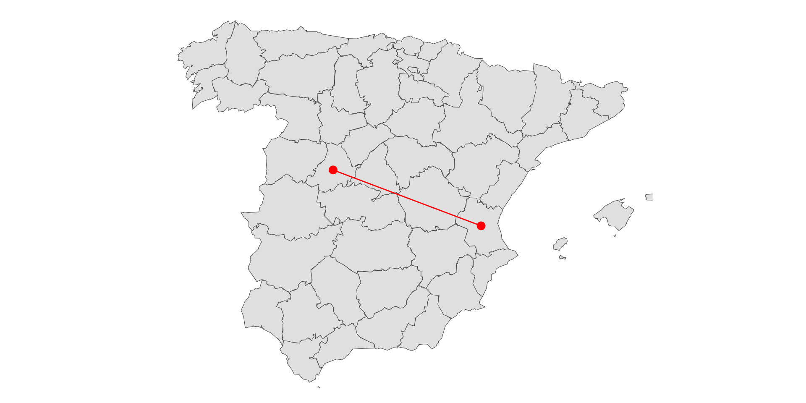Buffers
Another type of operation is buffer
st_buffer calculates buffers - polygons encompassing all points up to the specified distance from a given geometry.
We can for example calculate 250km buffers around Avila and Valencia:
avila_100 = st_buffer(avila_ctr, dist = set_units(250, 'km'))
valencia_100 = st_buffer(valencia_ctr, dist = set_units(250, 'km'))
ggplot()+
geom_sf(data=esp1c)+
geom_sf(data=avila_ctr, color = "red", size=3)+
geom_sf(data=valencia_ctr, color = "red", size=3)+
geom_sf(data=avila_100, color = "red", fill=NA)+
geom_sf(data=valencia_100, color = "red", fill=NA)+
#geom_sf(data=l, color = "red")+
theme_void() +
coord_sf(xlim = c(min_lon_x - error, max_lon_x + error),
ylim = c(min_lat_y - error, max_lat_y + error))Buffers
Another type of operation is buffer
st_buffer calculates buffers - polygons encompassing all points up to the specified distance from a given geometry.
We can for example calculate 250km buffers around Avila and Valencia:
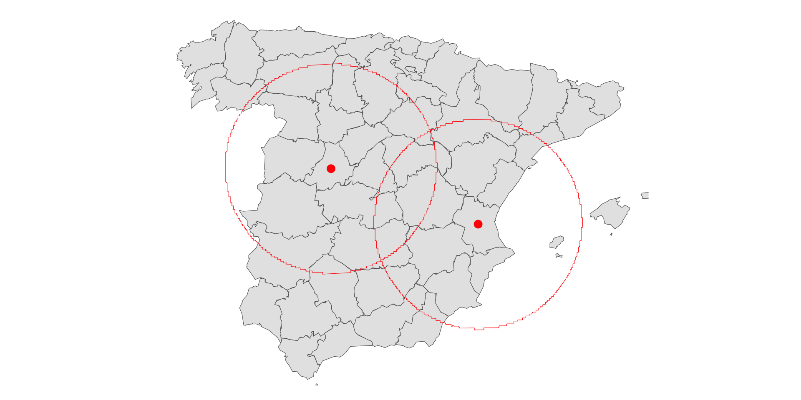Geometry Difference from Pairs
There are four geometry-generating functions that operate on pairs of input geometries:
st_intersectionst_differencest_sym_differencest_union
Geometry Difference from Pairs

Geometry Difference from Pairs

Geometry Difference from Pairs

Geometry Difference from Pairs

Geometry Difference from Pairs

Geometry Difference from Pairs: union
We might be interested in the total area that is within 250km from both Anvila and Valencia
We can do this in the following way:
avila_100 = st_buffer(avila_ctr, dist = set_units(250, 'km'))
valencia_100 = st_buffer(valencia_ctr, dist = set_units(250, 'km'))
union_area<-st_union(avila_100, valencia_100)
ggplot()+
geom_sf(data=esp1c)+
geom_sf(data=avila_ctr, color = "red", size=3)+
geom_sf(data=valencia_ctr, color = "red", size=3)+
geom_sf(data=union_area, color = "red", fill=NA)+
theme_void() +
coord_sf(xlim = c(min_lon_x - error, max_lon_x + error),
ylim = c(min_lat_y - error, max_lat_y + error))Geometry Difference from Pairs: union
We might be interested in the total area that is within 250km from both Anvila and Valencia
We can do this in the following way:
Geometry Difference from Pairs: union
Remember that st_union can also be applied to an individual layer,
This returns a dissolved union of all geometries:
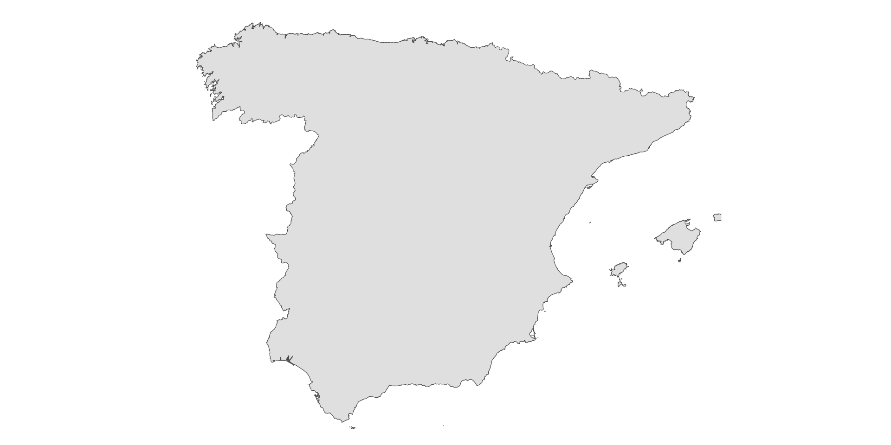Vector layer aggregation
Sometimes, we may not want to dissolve all features into a single geometry
Sometimes, we may want to dissolve by an attribute
Vector layer aggregation
Let us assume that we did not have the polygons for provinces in Spain.
And we had instead polygons for sub-provinces.
Vector layer aggregation
We can visualize all the provices by color.
Vector layer aggregation
We can visualize all the provices by color.
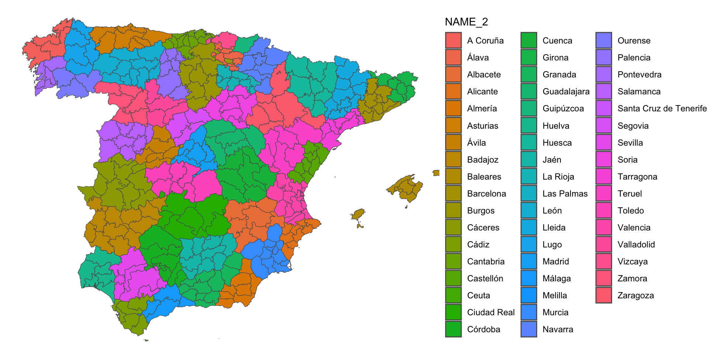Vector layer aggregation
We can thus aggregate by NAME_2 - the variable that defines the name of the province
Vector layer aggregation
We can thus aggregate by NAME_2 - the variable that defines the name of the province
And then map it out:
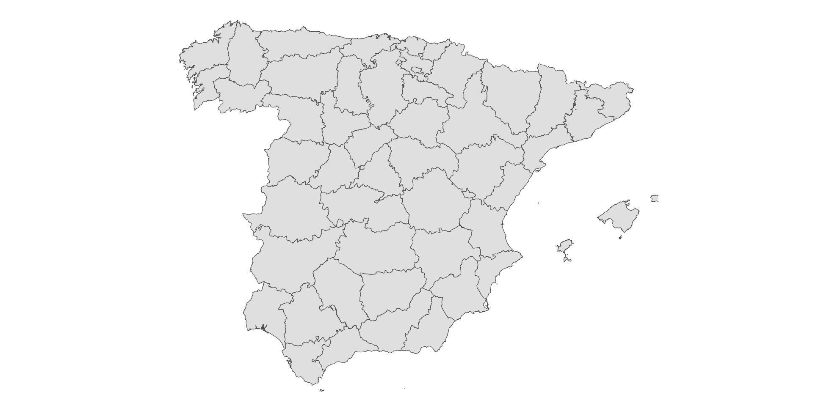Vector layer aggregation
We can also aggregate by NAME_1
And then map it out:
Vector layer aggregation
We can thus aggregate by NAME_1
And then map it out:
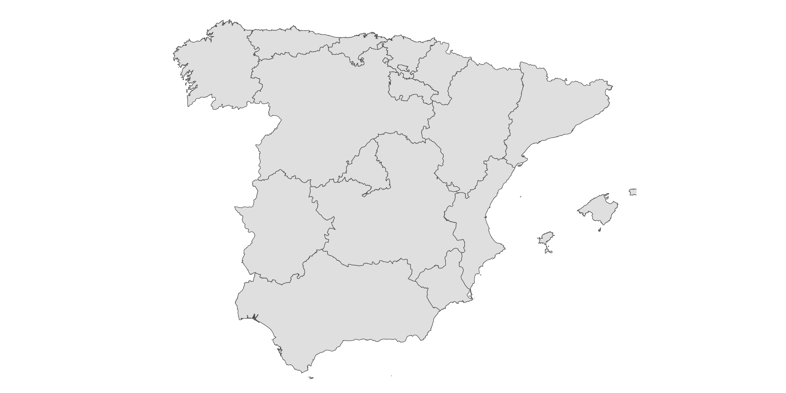Vector layer aggregation
A common operation is to calculate density of lines within polygons
For example, we would be interested in calculating density of railways within provinces
#Step1: Reading the polylines
rails <- st_read(dsn="./data/europe-railways-shape/railways.shp", quiet = TRUE)
#Step2: Calculating the length of rails in m
lengths <- st_length(rails)
#Step3: Uniting the lines
merged_line <- st_union(rails)
#Step4: Summing up the lengths of the original lines
total_length <- sum(lengths)
#Step5: Creating a new sf object with the merged line and total length
result_sf <- st_sf(geometry = merged_line, total_length = total_length)
ggplot()+
geom_sf(data=esp1c)+
geom_sf(data=result_sf, color = "red")+
theme_void() +
coord_sf(xlim = c(min_lon_x - error, max_lon_x + error),
ylim = c(min_lat_y - error, max_lat_y + error))Vector layer aggregation
A common operation is to calculate density of lines within polygons
For example, we would be interested in calculating density of railways within provinces
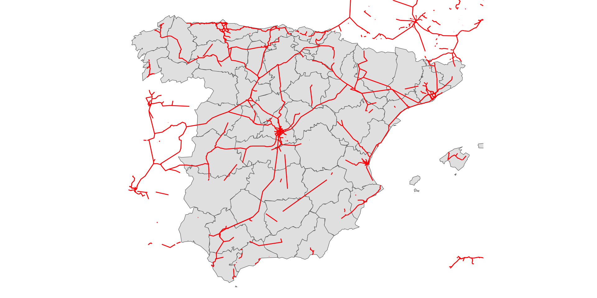Vector layer aggregation
#Step1: Performing the intersection between rails and polygons
intersection <- st_intersection(rails, esp1c)
#Step2: Calculating the length of the intersecting polylines
intersection$length <- st_length(intersection)
#Step3: Saving only relevant vars
intersection2<-subset(intersection, select = c("NAME_2", "length"))
#Step4: Dropping the geometry
intersection2<-st_drop_geometry(intersection2)
#Step5: Dividing the length by 1000 to obtain km
intersection2$length<-as.numeric(intersection2$length)/1000
#Step6: Performing the left join (left = polygons; right = lines)
esp1c<-left_join(esp1b, intersection2, by = c("NAME_2"= "NAME_2"))
#Mapping
ggplot(esp1c, aes(fill=length)) +
geom_sf() +
geom_sf_text(aes(label = NAME_2), colour = "white", size=2)+
theme_void() +
coord_sf(xlim = c(min_lon_x - error, max_lon_x + error),
ylim = c(min_lat_y - error, max_lat_y + error))Vector layer aggregation
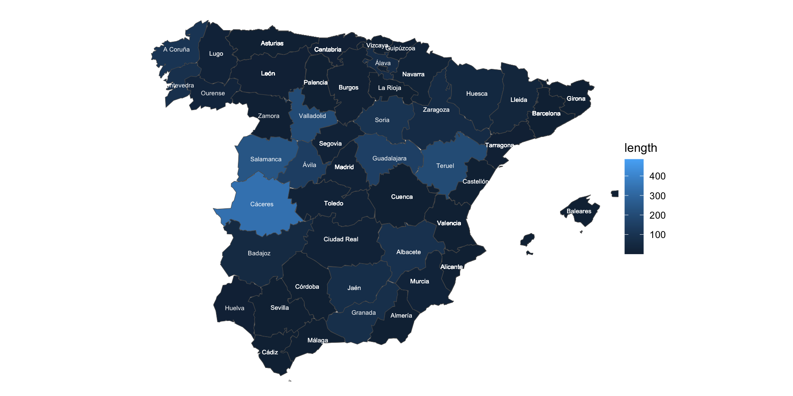Conclusion
We have covered a veriety of sf functions:
- join data to a vector by location
- agregate points by polygon
- perform geometric calculations: areas, change units
- calculating distances
- calculating centroids
- making buffers and dissolving polygons
- casting lines
- intersecting polygons
- aggregating polygons by attributes
- calculating line density by polygona
Popescu (JCU): Lecture 8